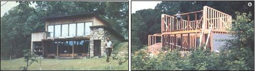
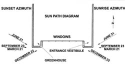
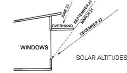
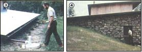

Cooperate With Nature
November/December 1980
This southern Illinois couple built their home to . . .
By Jim Murphy
When Carla and Paul Yambert moved into their solar- and wood-heated, earth-bermed home in mid-1979, they regarded the event as yet another part of a lifestyle that has - through the years - increasingly translated the couple's eco- philosophy into actual living in accord with nature.
The Yamberts have always been lovers of the outdoors (Paul's an environmental studies professor at Southern Illinois University), and they raised their family in the woodsy setting of Shawnee National Forest, which runs across Illinois's southern tip. Though the couple found the locale to be ideal, their original dwelling was fairly conventional . . . so - when the youngest child left home - the senior Yamberts began building the smaller, tighter, more ecologically sound, and more self-sufficient nest they'd been planning for years.
Perhaps the most fascinating (and instructive) feature of the Yamberts' new home is the manner in which it combines a variety of existing technologies and materials to provide both efficiency and comfort. Nestled into a south-facing hillside for natural insulation, the house also makes good use of passive solar techniques, relying - for storage - upon the thermal mass supplied by a huge stone fireplace that's heated on the outside by the sun and on the inside by wood.
The extensive insulation, a solar greenhouse, two heat-lock vestibules, and - of course - the earth sheltering help the sunwood combination provide all the building's space heating. And other systems - including a cistern and a composting toilet - allow the couple to further reduce the burden they place upon nature.
Now that the house and its occupants have completed a year-long "shakedown cruise", Paul and I - I'm a university colleague with a long-term solar infatuation of my own - both feel compelled to share the story of this success with MOTHER's readers. What's more, since we can take advantage of 20/20 hindsight, we'll pass on a few suggestions and cautions to help other folks who might embark upon similar projects.
QUALITY CONSTRUCTION
The rectangular house - which has a shed-style roof - is a sturdy structure containing 1,360 square feet of floor space . . . including the loft. Its quality of construction far exceeds that of today's average frame building: Consider, for example, that the exterior walls were built from 2 X 6 lumber on 16-inch centers . . . or that the main floor is slate (a material which doubles as a second heat sink) . . . and that rough-sawed cedar siding is used extensively inside and out.
The way in which the building is insulated also sets it apart from most conventional structures. Part of the dwelling's insulation is natural: On the north (uphill) side, the house is set into the earth nearly to its roof line. The side walls, however, are made of concrete blocks filled with vermiculite, which are - in turn - backed with two inches of polyurethane on the outside and two inches of fiberglass on the inside . . . for a total R-value of about 24. Furthermore, the wooden walls have six inches of fiberglass and the ceiling has 12 inches of batt (with even thicker insulation in the critical heat-retention area above the fireplace).
The Yamberts employed a conventional builder to undertake what they considered to be the basic elements of the home's construction, but wound up doing much of the work themselves anyway. Looking back, they realize that the preconceptions held by the average contractor can be of significant disadvantage to folks who are trying to build in a more ecologically sound fashion. As Paul aptly put it, "The professional isn't sure whether your variations on standard techniques are the result of cleverness or stupidity, so he or she tries to change them back to comply with the rules of normal procedure . . . and then - to avoid embarrassing you - doesn't tell you what was changed."
Such an incident almost occurred during construction of the Yamberts' bathroom. Because standard building practice is to put the toilet between the bathtub and the sink, the contractor took it upon himself to change the locations that the couple had specified for the water supply, and for the "stool's" vent pipes. However, the composting toilet needed to be placed directly over the huge decomposition unit that had already been built under the house. (And for that matter, a "fermenting potty" doesn't require any water supply lines to begin with!)
Fortunately, the owners caught the mistake in time to correct it, but they found it necessary to keep a constant eye on the builder to avoid having their innovations replaced by the exact outmoded procedures they were trying to get away from!
ENERGY CENTER
The fireplace's huge column of rock - located in the middle of the structure - is the main component of the home's heating system. Outside air, for combustion, is drawn into the unit through ducts in the floor, and the firebox is equipped with glass doors and a special thermal grate - a Martin Octotherm - which pumps the warmed air back into the room.
Additionally, the heat that rises through the large flue is captured and piped down into a 2-1/2-foot-deep rock storage area located beneath the building's six-inch concrete foundation. A six-inch-diameter pipe transmits the air in the flue, and four-inch ducts carry the warmth to the stones beneath the floor.
At present the system is operated by means of a 1/24-HP blower, but the Yamberts have discovered that their system is both undersized and underpowered. "We didn't adequately estimate how buoyant the hot air would be ... how much it would resist being pulled down," Paul says. Consequently, the owner/designer now recommends that anyone duplicating the idea use 12-inch pipe in the flue, six-inch ducts in the floor, and a 1/2-HP fan.
The Yamberts realized, from the beginning, that their fireplace wouldn't be quite as efficient as a stove, but they wanted to be able to sit before the open hearth. Now, however, Paul concedes that a fireplace insert may be added soon. It's not that the system has failed to keep them warm . . . but that he feels he had to cut too much wood to maintain a comfortable temperature during 1979-1980's mild winter.
Of course, in addition to providing a cheery blaze in the main room, the fireplace furnishes ample heat to its "Blazing Showers" water warmer (which the couple read about in MOTHER NO. 42). During the wood-heating months, the setup has proved itself more than capable of supplying all the household's hot water needs, and the backup electric unit seldom comes into play. (In fact, since they recently installed a pair of Solarcraft solar collectors for summer water heating, the Yamberts believe that they could get along entirely without the watt-powered standby.)
The south wall of the home is made up of an expanse of double-insulated glass which allows the winter sun to shine deep into the house and bake into the stone fireplace. Paul and Carla got a bargain on their glazing by locating factory-sealed double panes without any casements, and building their own frames. If he had to do it again, though, Paul says he'd probably go against conventional wisdom and use single pane glass backed up by heavy insulating curtains . . . simply to save more money.
The home's location (and the placement of its porch and eaves) was planned to capture the winter sun and reject the summer rays. Specifically, the Yamberts designed their structure to take full advantage of solar heat . . . from one week before the fall equinox to one week after the spring equinox. The eaves provide midday shading when the summer sun is high, and the entrance vestibule (east) and the greenhouse (west) were positioned to protrude from the front of the building for extended early morning and late afternoon sunshine control.
And, in day-to-day use, the siting of the structure has been even more effective than Paul and Carla had expected. In fact, last winter they were surprised to find that they were often getting more solar heat than they needed. So, halfway through the cold season, they installed reflective Mylar-faced fiberglass shades . . . which can be pulled down to regulate the amount of light entering the house.
With the sun warming the outside of the rock and the fire heating it inside, the thermal storage of the fireplace "core" kept the interior of the Yamberts' home cozy throughout the winter last year. . . despite temperatures that nudged zero on occasion. (Of course, the home's heat-lock entries also helped to keep the structure from losing BTU ... and the greenhouse did its part by capturing some additional solar warmth on its own.)
WATER AND SEWAGE
Paul and Carla were particularly concerned - while planning their home - with the problems involved in gathering and disposing of water. Rather than go to the expense of drilling a well, they opted for a cistern . . . which is fed by the entire expanse of the structure's roof. And the system has provided the couple with plenty of domestic water . . . largely because their Clivus Multrum composting toilet greatly reduces their demand for the precious liquid.
The local health inspector agreed to the installation of the toilet, but initially demanded that a septic system be installed to treat the "gray water" from the bathroom and kitchen . . . despite the fact that all solid garbage would go into the composter. The Yamberts talked with the official for several months (during which time "the man educated himself", as Paul puts it) and eventually got him to agree to a gray-water system consisting of two 50-foot lengths of drainage pipe, surrounded above and below by a foot of gravel and covered by topsoil. The ditches - dug ten feet apart - have proved more than adequate for returning soapy liquid to its pure state, and have done so at low cost and with minimal impact on the environment.
THE RIGHT PRICE
Paul and Carla have spent an estimated $38,000 on their home to date. Now most conventional contractors would say that a house of such quality just can't be constructed for $28 per square foot. But the Yamberts have not only built their home for just that cost, but also realize a significant saving each time their utility bills arrive!
Such expenses, throughout the year, average between $20 and $25 per month. And that price includes the cost of operating the backup water heater, a clothes washer and dryer, a refrigerator, a range, lights (mostly fluorescent), assorted small appliances, and the water pump for their cistern.
Though the Yamberts are obviously not displeased with the economic benefits provided by their new home, they still like to touch back on their philosophical intentions behind the project. The couple often talk about adapting to nature, rather than forcing the environment to bend to their whims.
Sure, they could have made the house easier to live in: Each day they open and close shades in cycle with the sun . . . and chopping and toting wood are regular chores. But, by constructing their house without a backup heating system, the two people have intentionally tied themselves intimately to nature. "That underlying philosophy is very important to us," says Paul. "We want to make our own bargain with the environment . . . our own private arrangement."
|
 (LEFT): By digging the north side of their home into a hillside and covering the south side with grass, the Yamberts have cut their need for commercial power sources...(RIGHT) :and heavy insulation made possible by 2 X 6 framing. |
 (left) Solar collectors will cut the family's use of electricity even further. . .(right) a massive stone fireplace that stores both heat from the sun and burning wood |
 Other design features include: (left)a cistern water system, which collects the liquid from their roof. . . (right) a double-door wood storage room to prevent heat losses. . . |
|
 |
 |
|